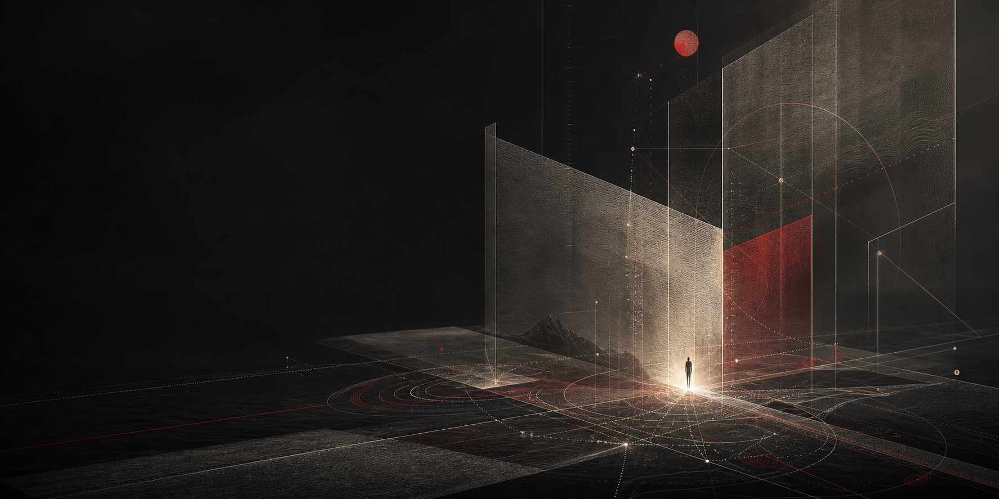

1. 世界可以理解为态结构（世界由什么构成？）
我们人类所处的世界可以理解为态结构，其中“态”可以理解为可区分的状态（差异），“态”以及“态”之间形成的关系，共同构成态结构。
态结构在持续演化中，会逐渐形成相互约束的关系与演化倾向，并在这些约束与倾向下继续演化。

📘《理解世界，定位人生，指引行动》V2.0
以下内容更接近于一种用于理解世界、定位人生与指引行动的基础解释框架。
本框架尝试以结构化方式理解世界、自我与行动的演化。
其中使用的概念，更接近用于统一理解世界的描述语言，而不被视为对世界终极本体的绝对定义。
本框架中的“态”，用于描述可区分的状态（差异）。“态”以及“态”之间形成的关系，共同构成态结构。
随着认知与知识的发展，本框架中的内容仍可能被继续修正、补充或替代。
本框架中的价值，更接近于对于持续维持自我连续性并参与态结构演化的态结构而言的工具性价值，而不被视为宇宙层面的绝对价值。
🌍 世界观
我们人类所处的世界可以理解为态结构，其中“态”可以理解为可区分的状态（差异），“态”以及“态”之间形成的关系，共同构成态结构。
态结构在持续演化中，会逐渐形成相互约束的关系与演化倾向，并在这些约束与倾向下继续演化。
在相同或高度相似的条件下，态结构在演化过程中可能对应不同演化方向与概率分布，而现实是其中一种实际发生的演化结果。
在整体趋势上，态结构更容易从较少可能出现的结构状态，演化到较多可能出现的结构状态，因此能够维持局部连续性的有序结构通常更难形成与维持；但在部分条件下，态结构内部形成的约束关系，仍可能限制部分演化方向，并形成相对稳定的局部连续性，而这种局部连续性的形成，也正是秩序的重要来源。
任何对于态结构的观察与参与，本身都属于态结构演化的一部分，并会影响态结构后续的演化方向。
🧠 人生观
作为持续演化的态结构的一部分，“自我”可以被理解为在持续演化中保持一定连续性的过程，而这种连续性会表现为对自身存在的持续体验。
自我与态结构之间形成的关联，会产生意义体验；而更深且更稳定的关联，通常更容易形成持续的意义体验。
死亡可以理解为自我连续性过程无法无限维持的最终边界，因此自我连续性过程始终处在这一边界的约束之中。
🎯 价值观
当关键结构的演化可能性持续收缩，并开始趋于封闭或僵化时，主动维持或重新打开其演化可能性具有价值。
态结构持续演化，因此主动持续修正结构描述具有价值。
态结构可能向不同方向演化，而自我对态结构的参与本身也会持续影响不同演化结果出现的概率，因此主动影响演化概率分布具有价值。
用于描述世界、自我与行动之间的基础关系，包括：
* 世界观（World Model）
* 人生观（Self Model）
* 价值观（Action Model）
该部分构成整个框架体系的核心结构。
用于将基础框架应用于现实中的决策、关系、学习、组织与长期行动。
生活，而非生存。
相遇，纵然错身。
拥抱，直面消逝。
3. 人类经验层（Human Experience Layer）（未来可能扩展）
1. 生活，而非生存。
现实背景
世界飞快，
人生却只是消耗。
时间无垠，
心迹却散作尘埃。
生活滞重，
自我却日渐漂浮。
生存跃迁
活已不易，
你值得浸透人间。
行动指引
2. 相遇，纵然错身。
现实背景
天涯咫尺，
相识却不得无猜。
相伴有情，
悲欢却究难感同。
春风依旧，
人生却终有离散。
人生回应
终有错身，
你值得点亮彼此。
行动指引
3. 拥抱，直面消逝。
现实背景
山河依旧，
人间却代代远去。
日月长明，
世间却流转不息。
星海辽阔，
宇宙却终归沉寂。
生命姿态
生命苦短，
你值得刻骨铭心。
行动指引
4. 边界与限制（Boundary & Limitation）
本框架主要用于结构化理解世界、自我与行动之间的关系，并不试图替代：
* 科学中的具体经验研究；
* 法律与社会规则；
* 个体情绪与主观体验；
* 特定文化、伦理与宗教体系。
本框架可用于重要判断、长期选择与关键行动中的底层思考，也可用于个体在世界、自我或意义结构发生根本性动摇时，对底层认知结构进行重新稳定与校验；但它并不主要用于替代日常经验、情绪调节或具体事务判断。
需要警惕将本框架用于合理化长期不行动、自我封闭或对他人连续性的持续破坏，并持续检验框架自身的适用边界。